The following gases contribute to the greenhouse effect:
1. Water Vapor (H₂O)

It is the most abundant greenhouse gas, but it also functions as climate feedback. As the Earth's atmosphere warms, water vapor levels rise, but so do the chances of clouds and precipitation, making these two feedback mechanisms crucial to the greenhouse effect.
2. Carbon Dioxide (CO₂)

Carbon dioxide, a tiny but important component of the atmosphere, is emitted by natural processes such as respiration and volcano eruptions, as well as by human activity such as deforestation, land use changes, and fossil fuel combustion. Since the start of the Industrial Revolution, humans have increased CO2 levels in the atmosphere by 48%. The most important long-term "forcing" of climate change is this.
3. Methane (CH₄)
Hydrocarbon gas is produced by both natural and human sources, such as waste decomposition in landfills, agriculture, and particularly rice cultivation, as well as ruminant digestion and manure management in domestic cattle. Methane is a lot more active greenhouse gas than carbon dioxide molecule for molecule, but it is also far less plentiful in the atmosphere.
4. Nitrous Oxide (N₂O)
Soil cultivation activities, particularly the use of commercial and organic fertilizers, fossil fuel combustion, nitric acid production, and biomass burning, all produce a significant amount of this strong greenhouse gas.
5. Chlorofluorocarbons (CFCs)
 Synthetic substances entirely of industrial origin are utilized in a variety of uses, but now mostly restricted in manufacturing and release to the atmosphere due to their ability to contribute to ozone layer damage by international agreement. In addition, they are greenhouse gases.
Synthetic substances entirely of industrial origin are utilized in a variety of uses, but now mostly restricted in manufacturing and release to the atmosphere due to their ability to contribute to ozone layer damage by international agreement. In addition, they are greenhouse gases.
On average, the Earth will warm. Warmer temperatures may be welcomed in some areas, but not in others. Warmer temperatures would likely result in more evaporation and precipitation overall, but various places may have different effects, with some being wetter and others getting dryer. A larger greenhouse effect will warm the ocean and cause glaciers and ice sheets to partially melt, raising sea levels. If the ocean heats, the water expands, adding to the rise in sea level.
Higher atmospheric carbon dioxide (CO2) levels can have both good and negative effects on crop production outside of a greenhouse. Plant development may be aided by increased CO2 levels, according to some laboratory research. Other effects, such as shifting temperatures, ozone, and water and nutrient scarcity, may, however, more than offset any potential yield improvement. If certain crops' ideal temperature ranges are exceeded, earlier production improvements may be decreased or reversed entirely.
Droughts, floods, and excessive temperatures are examples of climate extremes that can cause crop losses and affect agricultural producers' livelihoods as well as community food security around the world. Weeds, bugs, and fungi can thrive in warmer temperatures, wetter climates, and higher CO2 levels, depending on the crop and habitat, and climate change will likely increase weeds and pests.
Finally, while increased CO2 stimulates plant growth, research has revealed that it decreases the nutritional content of most food crops by lowering protein and critical mineral concentrations in most plant species. New pest and disease patterns may evolve as a result of climate change, impacting plants, animals, and humans and creating new dangers to food security, food safety, and human health.